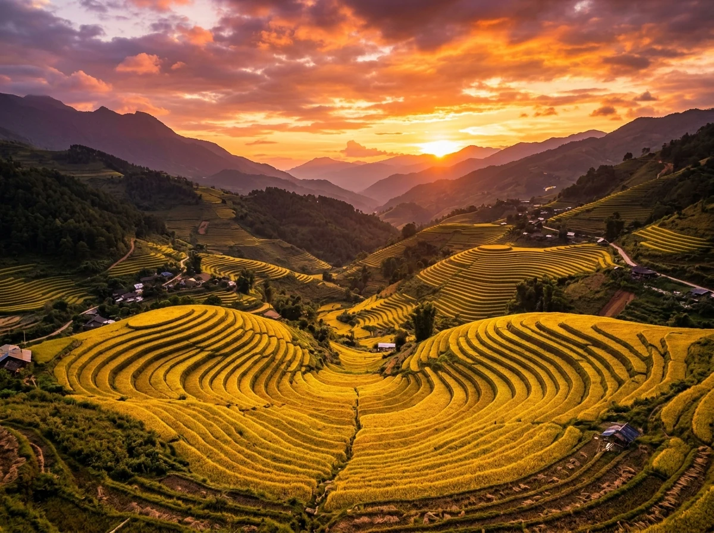
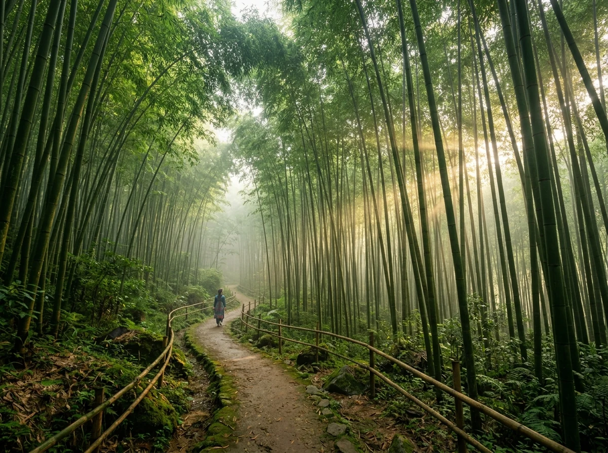
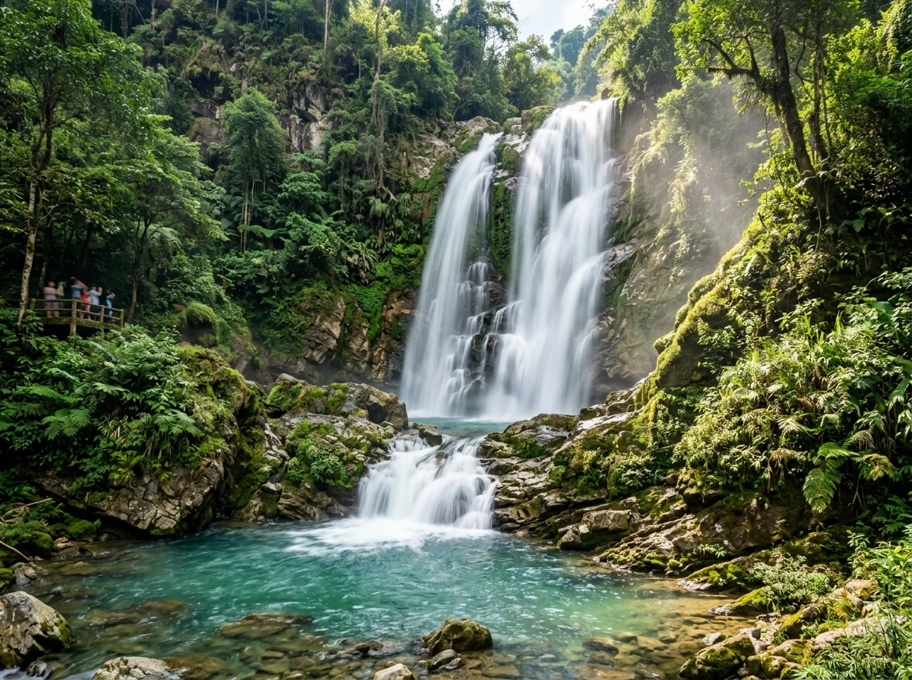
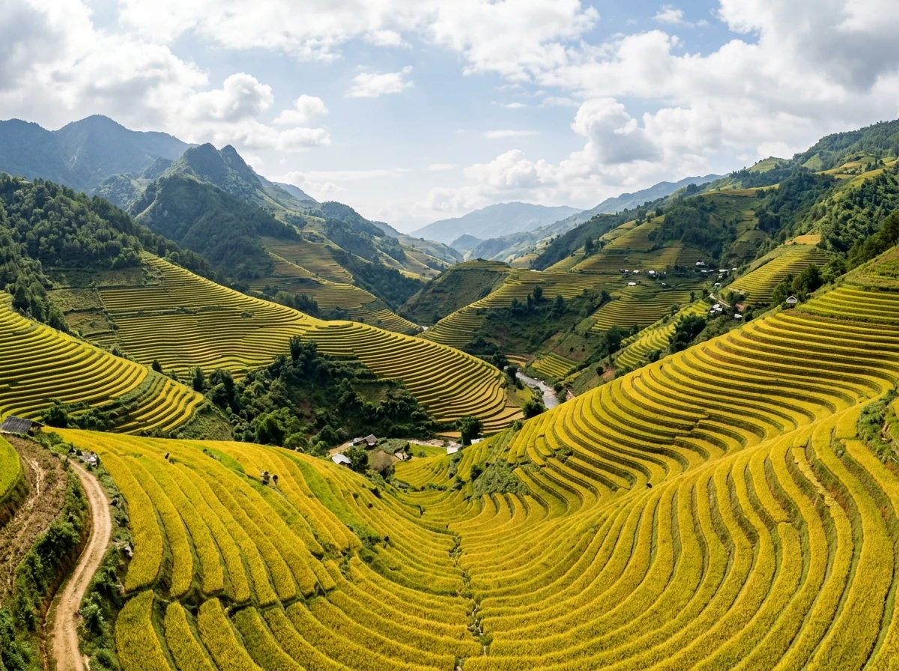

🏞️ 1. Di sản Ruộng bậc thang Kỳ vĩ bậc nhất Thế giới
Nằm cách thủ đô Hà Nội gần 280km về phía Tây Bắc, huyện Mù Cang Chải (tỉnh Yên Bái) nằm trọn dưới chân dãy núi Hoàng Liên Sơn hùng vĩ. Với hơn 2.200ha ruộng bậc thang uốn lượn tầng tầng lớp lớp, danh thắng này đã được Thủ tướng Chính phủ xếp hạng là Di tích quốc gia đặc biệt và được các tạp chí du lịch quốc tế uy tín (như CN Traveler, National Geographic) vinh danh trong top những vùng ruộng bậc thang đẹp nhất hành tinh.
Nét độc đáo của Mù Cang Chải nằm ở chỗ: đây không phải là cảnh quan thiên nhiên đơn thuần, mà là một công trình nhân tạo vĩ đại tượng trưng cho nghệ thuật sinh tồn, khai phá và dẫn nước khe suối tài tình của người Mông. Mỗi thửa ruộng là một tác phẩm điêu khắc sống động trên nền đất mẹ bao la.
📸 2. 8 Tọa độ Check-in Biểu tượng & Sự tích Kỳ bí
(Nhấp vào từng hình ảnh để xem chi tiết ảnh chất lượng cao và câu chuyện truyền tích lịch sử)
Đồi Mâm Xôi (La Pán Tẩn)
Thửa ruộng hình mâm xôi tròn vẹn tuyệt mỹ ngự giữa thung lũng, biểu tượng bất hủ cho sự sung túc của người Mông.

Đồi Móng Ngựa (Sáng Nhù)
Vòng cung bậc thang hình móng ngựa kỳ vĩ, điểm ngắm hoàng hôn dát vàng đẹp nhất Tây Bắc.
Đèo Khau Phạ — Sừng Trời
Cung đèo hiểm trở dài hơn 30km đâm xuyên mây mù, điểm bay dù lượn ngắm trọn thung lũng lúa từ tầng trời.
Thung lũng Tú Lệ
Thung lũng trù phú nức tiếng nếp tan dẻo quánh, cốm xanh ngát và những nếp nhà sàn thanh bình bên dòng suối mát.

Rừng Trúc Púng Luông
Rừng trúc cổ thụ hơn 60 năm tuổi xanh ngút ngàn, lối mòn mộng ảo đẹp tựa phim kiếm hiệp.

Thác Pú Nhu
Dải thác bạc 20m đổ xuống hồ nước trong vắt mát lạnh, ẩn mình bình yên giữa đại ngàn xanh biếc.
Bản Lìm Mông & Lìm Thái
Bản làng yên ả dưới chân đèo Khau Phạ, nơi suối Nậm Có rì rào ôm lấy những vựa lúa vàng trĩu hạt.

Mũi Giày Chế Cu Nha
Những cung ruộng dốc đứng uốn lượn hình mũi giày độc đáo, minh chứng cho ý chí tạc núi của người Mông.
🚗 3. Hướng dẫn Di chuyển & Cung đường Vượt Đèo
1. Chặng Hà Nội → Mù Cang Chải (~280km)
- Xe Limousine / Giường nằm chất lượng cao: Xuất phát từ bến xe Mỹ Đình hoặc Giáp Bát lúc 21h00 – 22h00 tối, ngủ một giấc sáng sớm hôm sau (khoảng 4h30 – 5h00) bạn đã có mặt tại ngã ba Kim hoặc thị trấn Mù Cang Chải.
- Phượt xe máy / Tự lái ô tô: Cung đường kinh điển theo QL32: Hà Nội → Sơn Tây → Cầu Trung Hà → Thanh Sơn (Phú Thọ) → Thu Cúc → Ba Khe → Thị xã Nghĩa Lộ → Tú Lệ → Đèo Khau Phạ → Mù Cang Chải. Cung đường này tuyệt đẹp nhưng cần tay lái vững khi qua các đoạn đèo dốc quanh co.
2. Di chuyển nội khu Mù Cang Chải
- Thuê xe máy tự lái: Thích hợp chạy trên các trục đường liên xã chính (Tú Lệ – Khau Phạ – Púng Luông – Mù Cang Chải).
- Dịch vụ Xe ôm bản địa (Bắt buộc với Đồi Mâm Xôi & Móng Ngựa): Đường lên đỉnh các đồi ruộng bậc thang cực kỳ dốc, hẹp và đất trơn. Để đảm bảo an toàn tuyệt đối, bạn nên đi xe ôm của bà con người Mông tại chân đồi.
💡 Mẹo di chuyển an toàn: Đoạn đèo Khau Phạ thường xuất hiện sương mù dày đặc vào chiều muộn và sáng sớm. Nếu đi xe máy, hãy bật đèn sương mù, đi số thấp (số 2 hoặc 3) và không rà phanh liên tục khi đổ đèo.
🎫 4. Bảng giá vé & Chi phí Tham quan Tham khảo
Dưới đây là mức giá tham khảo các dịch vụ trải nghiệm tại Mù Cang Chải:
| Điểm đến / Dịch vụ trải nghiệm | Chi phí tham khảo | Ghi chú |
|---|---|---|
| Vé tham quan Đồi Mâm Xôi (La Pán Tẩn) | Vé niêm yết tại quầy | Vé vào cổng danh thắng bảo tồn |
| Xe ôm chở lên đỉnh Đồi Mâm Xôi (Khứ hồi) | Theo quy định tổ xe ôm | Đường dốc cao, tay lái bản địa |
| Vé tham quan Đồi Móng Ngựa (Sáng Nhù) | Vé niêm yết tại quầy | Điểm ngắm hoàng hôn đỉnh cao |
| Vé tham quan Rừng Trúc Púng Luông | Vé niêm yết tại quầy | Bao gồm phí bảo tồn rừng nguyên sinh |
| Trải nghiệm Dù lượn "Bay trên mùa vàng" Khau Phạ | Đăng ký theo tour dù lượn | Bay cùng phi công chuyên nghiệp kèm video |
🍲 5. Lưu trú & Ẩm thực Bản địa Nức tiếng
1. Gợi ý điểm lưu trú
- Homestay nhà sàn bản Lìm Mông / La Pán Tẩn: Không gian thô mộc, ấm cúng, mở cửa sổ ra là ngắm trọn thung lũng lúa vàng và sinh hoạt cùng gia đình đồng bào.
- Resort & Ecolodge sinh thái: Khu nghỉ dưỡng cao cấp tại Tú Lệ (Le Champ Tu Le) hoặc Mu Cang Chai Ecolodge (Nậm Khắt) với suối khoáng nóng và view hồ bơi vô cực ngắm ruộng bậc thang.
- Khách sạn trung tâm thị trấn: Đầy đủ tiện nghi, gần chợ đêm Mù Cang Chải và thuận tiện ăn uống.
2. Món ngon Mù Cang Chải & Tú Lệ nhất định phải thử
🗓️ 6. Thời điểm vàng & Kinh nghiệm Đi săn lúa
1. Các mùa đẹp nhất trong năm
- Tháng 9 – Tháng 10 (Mùa Lúa Chín): Mùa vàng rực rỡ nhất trong năm. Toàn bộ thung lũng khoác lên mình chiếc áo vàng óng ả, không khí lễ hội dù lượn rộn ràng.
- Tháng 5 – Tháng 6 (Mùa Nước Đổ): Khi những cơn mưa đầu mùa đổ xuống, ruộng bậc thang ngập nước lung linh như hàng triệu tấm gương phản chiếu trời mây.
- Tháng 12 – Tháng 1 (Mùa hoa Tớ Dày): Mùa đông se lạnh với sắc hồng thắm của loài hoa đào rừng Tớ Dày đặc trưng nở rực khắp các triền đồi đón Tết của người Mông.
⚠️ Lưu ý bảo vệ danh thắng: Tuyệt đối không giẫm đạp lên lúa, không bẻ bông lúa để chụp ảnh. Giữ gìn vệ sinh môi trường, không vứt rác tại các điểm tham quan và tôn trọng nếp sống sinh hoạt văn hóa của đồng bào người Mông, người Thái.